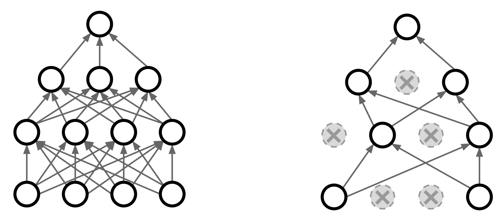

<h1> Neural Networks <br/> and <br/> Machine Learning </h1> ### Week 3: Fully Connected Networks ### Instructor: Prof. Emre Neftci <center>https://canvas.eee.uci.edu/courses/21750</center> [](?print-pdf)
## Fully-connected Feedforward Networks (MLP) <img src="img/mlp.png" id="fwimg" style="height:200px"/> - Consists of fully connected (dense) layer. - Implements the function: $$ \mathbf{y} = \sigma \left( W \mathbf{x} + \mathbf{b}\right) $$ <pre><code class="Python" data-trim data-noescape> a = torch.nn.Linear(in_channels=10, out_channels=5) y = torch.sigmoid(a) </code></pre> - Weight and bias values can be accessed with: <pre><code class="Python" data-trim data-noescape> a.weight a.bias </code></pre>
## Activation Functions <div class=row > <div class=column > Step $ \begin{split}\Theta(z) = \begin{matrix} 1 & z>0 \\ 0 & z<0 \end{matrix}\end{split} $ <img src=img/step.png class=small /> <pre><code class="Python" data-trim data-noescape> torch.sign </code></pre> </div> <div class=column > Rectified Linear $ y = [a]^+ = \begin{split}ReLU(a) = \begin{matrix} a & a > 0 \\ 0 & a <= 0 \end{matrix}\end{split} $ <img src=img/relu.png class=small /> <pre><code class="Python" data-trim data-noescape> torch.relu </code></pre> </div> </div> <div class=row> <div class=column > Sigmoid $ \sigma(z) = \frac{1} {1 + e^{-z}} $ <img src=img/sigmoid.png class=small /> <pre><code class="Python" data-trim data-noescape> torch.sigmoid </code></pre> </div> <div class=column > Tanh $ tanh(z) = \frac{e^{z} - e^{-z}}{e^{z} + e^{-z}} $ <img src=img/tanh.png class=small /> <pre><code class="Python" data-trim data-noescape> torch.tanh </code></pre> </div> </div>
## Activation Functions as Modules Activation functions can also be called as modules: <div class=row > <div class=column > Sigmoid <pre><code class="Python" data-trim data-noescape> torch.nn.Sigmoid </code></pre> </div> <div class=column > Rectified Linear <pre><code class="Python" data-trim data-noescape> torch.nn.ReLU </code></pre> </div> </div> <div class=row> <div class=column > Tanh <pre><code class="Python" data-trim data-noescape> torch.nn.Sigmoid </code></pre> </div> <div class=column > No built-in module for Step (but we will build our own when necessary) </div> </div> - (Activation function as modules are useful well building networks, but are otherwise same as the functions in the previous slide)
## Sequential Module Modules can be composed to build a neural network. The simplest method is the "sequential" mode that chains the operations <pre><code class="py" data-trim data-noescape> my_first_nn = torch.nn.Sequential(torch.nn.Linear(2, 5), torch.nn.Sigmoid(), #this is an activation function torch.nn.Linear(5, 20), torch.nn.Sigmoid(), torch.nn.Linear(20, 2)) </code></pre> Sequential returns a module, so it can be called as a function <pre><code class="py" data-trim data-noescape> my_first_nn(x) </code></pre> - Note that output dimensions of layer l-1 must match input dimensions of current layer l! [](https://drive.google.com/open?id=1botgh24In3QFyMc9AmezPszgt2ntJ-OL) <pre><code class="py" data-trim data-noescape> my_first_nn Sequential( (0): Linear(in_features=3, out_features=5, bias=True) (1): Sigmoid() (2): Linear(in_features=5, out_features=20, bias=True) (3): Sigmoid() (4): Linear(in_features=20, out_features=2, bias=True) ) </code></pre>
## PyTorch Neural Network Building Block: Module - Sequential works well for fully feedforward networks. - In most cases, however, neural networks are implemented explicitely: <pre><code class="py" data-trim data-noescape> class MySecondNetwork(torch.nn.Module): def __init__(self, n1, n2, n3, num_classes): super(MySecondNetwork, self).__init__() self.layer1 = torch.nn.Linear(n1,n2) self.layer2 = torch.nn.Linear(n2,n3) self.layer3 = torch.nn.Linear(n3,num_classes) self.sigmoid = torch.nn.Sigmoid() def forward(self, data): y1 = self.sigmoid(self.layer1(data)) y2 = self.sigmoid(self.layer2(y1 )) y3 = self.sigmoid(self.layer3(y2 )) return y3 my_second_net = MySecondNetwork(3,10,5,2) </code></pre>
## Training Neural Networks - Neural networks are usually trained using gradient backpropagation - The user defines a loss function - Gradient backpropagation takes small steps in the direction opposite to the gradient to decrease the loss.  - Learning requires computing gradients for each parameter and intermediate operation. - Neural network can have millions of optimized parameters, with hundreds of intermediate operations performed on them.
## Loss functions and optimizers - The loss function defines our objective. It is generally a **scalar**. - An optimizer defines the strategy to minimize the loss function - Common loss functions for regression and classification: - nn.MSELoss: Mean-Squared Error, default for regression tasks $$ L_{MSE} = \frac1N \sum_{n} \sum_i (y_{ni}-t_{ni})^2 $$ - nn.CrossEntropyLoss: Default for classification tasks $$L_{XENT} = - \frac1N \sum_n \sum_i t_{ni} \log y_{ni}$$
## Loss Function Example - Mean-Squared Error (MSE) <pre><code class="Python" data-trim data-noescape> mse_loss = torch.nn.MSELoss() target = torch.FloatTensor([[1.,0.,0.],[0.,0.,1.]]) loss = mse_loss(my_first_nn(data), target) </code></pre> - Cross Entropy <pre><code class="Python" data-trim data-noescape> xent_loss = torch.nn.CrossEntropyLoss() target = torch.LongTensor([0,2]) loss = xent_loss(my_first_nn(data), target) </code></pre>
## Loss functions and optimizers - The loss function defines our objective - An optimizer that defines the strategy to minimize the loss function (thus reach the objective) - Common optimizers: <ul> <li /> SGD : A vanilla stochastic gradient descent algorithm <pre><code class="Python" data-trim data-noescape> torch.optim.SGD </code></pre> <li /> RMSprop : An optimizer that normalizes the gradients using moving root-mean-square averages <pre><code class="Python" data-trim data-noescape> torch.optim.RMSProp </code></pre> <li /> Adam : An adaptive gradients optimizer, works best in many cases <pre><code class="Python" data-trim data-noescape> torch.optim.Adam </code></pre> </ul> <ul> <li/> The optimizer function takes network parameters and learning rate as mandatory arguments <pre><code class="Python" data-trim data-noescape> opt = torch.optim.SGD(my_first_nn.parameters(), lr=1e-3) </code></pre> </ul>
## The Training Loop All the parts of the machine learning algorithm come together in the training loop, *i.e.* proceeding iteratively over data samples and make gradient updates. 1. Create a neural network, cost function and optimizer 2. In a loop: 1. Compute the neural network loss 2. Take the gradient of the loss using .backward() 3. Run one optimization step (= apply the gradient) <pre><code class="Python" data-trim data-noescape> def train_step(data, tgt, net, opt_fn, loss_fn): y = net(data) loss = loss_fn(y, tgt) loss.backward() opt_fn.step() opt_fn.zero_grad() return loss </code></pre> <pre><code class="Python" data-trim data-noescape> for i in range(100): print(train_step(b, t, my_first_nn, opt, mse_loss)) </code></pre>
## Training with Minibatches - Neural networks are trained in minibatches to parallelize the computations (GPUs are good at that) - A dataset is commonly split into batches of equal size. - A minibatch of data is simply provided as a higher order tensor - It is necessary to have a function that slices and "packages" minibatches. In PytTorch, this is most easily done with **data loaders**.
## Dataloaders - Data loaders are PyTorch classes to help loading, slicing, shuffling, pre-processing and iterating over the data. - MNIST is a dataset consisting of hand-written digits <a href="http://yann.lecun.com/exdb/mnist/" target="_blank">(http://yann.lecun.com/exdb/mnist/)</a> - MNIST is large (60k digits) we need to provide data in batches. - The following code downloads MNIST and builds a dataloader. The data loader will dynamically slicing the 60k digits in minibatches of 100, shuffle it (shuffle), and pre-processes it (transform) <pre><code class="Python" data-trim data-noescape> from torchvision import datasets, transforms train_set = datasets.MNIST('./data', train=True, download=True, transform=transforms.Compose([ transforms.ToTensor(), transforms.Normalize((0.1307,), (0.3081,)) ]), train_loader = torch.utils.data.DataLoader(train_set, batch_size=100, shuffle=True) </code></pre> - Later in this class, we will learn how to build our own data loader from raw data
## Dataloaders (one hot transform) - If the labels are categorical and your loss requires a target vector, you need to use a one hot encoding. Use the following code: <pre><code class="Python" data-trim data-noescape> class toOneHot(object): def __init__(self, num_classes): self.num_classes = num_classes def __call__(self, integer): y_onehot = torch.zeros(self.num_classes) y_onehot[integer]=1 return y_onehot train_set = datasets.MNIST('./data', train=True, download=True, transform=transforms.Compose([ transforms.ToTensor(), transforms.Normalize((0.1307,), (0.3081,)) ]), target_transform = toOneHot(num_classes = 10),) train_loader = torch.utils.data.DataLoader(train_set, batch_size=100, shuffle=True) </code></pre>
## Iterators - With a data loader, we can create a Python iterator to iterate over the entire dataset <pre><code class="Python" data-trim data-noescape> train_iter = iter(train_loader) </code></pre> - An iterator will iterate over all the samples by minibatches. <pre><code class="Python" data-trim data-noescape> data, target = next(train_iter) </code></pre> - The dimensions of data are [100,1,28,28]. In words: 100 images of single channel (grayscale), 28 by 28 images. - Let's plot the first sample in the minibatch. Note that we need to select the channel, hence the second 0 <pre><code class="Python" data-trim data-noescape> from pylab import * imshow(data[0,0]) </code></pre> <img src="img/mnist_image.png" class=small />
## Iterating over all training batches during training - Data loaders are great because the training loop becomes very easy to implement: <pre><code class="Python" data-trim data-noescape> for x, t in iter(train_loader): train_step(x, t) </code></pre> - If you use MSE loss, remember to use one hot target vectors (see week 1)
## Regularization Regularization can improve generalization error. The simplest regularization technique is to add a term to the cost: $$ C_{total} = C_{MSE} + \lambda R(W) $$ For example: - L2 Regularization: $R(W) = \sum_{ij} W_{ij}^2$ <pre><code class="Python" data-trim data-noescape> opt = torch.optim.Adam(net.parameters(), lr=1e-3, weight_decay=1e-3) </code></pre> - L1 Regularization: $R(W) = \sum_{ij} |W_{ij}|$ <pre><code class="Python" data-trim data-noescape> l1_loss = 0 for param in net.parameters(): l1_loss += torch.sum(torch.abs(param)) </code></pre>
## Anatomy of a PyTorch script for training and testing a Neural Network 0. Import necessary packages 1. Create Dataloaders for Train and Test 2. Create Model 3. Create Loss function (use MSE) 4. Create Optimizer 5. Train (*e.g.* one or more full presentations of dataset) 6. Test 7. Repeat 5,6 until test error stops decreasing
## A "no-bells-and-whistles" ANN on MNIST - Create a network module using two fully connected layers, of dimensions 784-100-10 - Data MNIST - Model: Sequential - Cost: MSE - Optimizer: Adam [](https://drive.google.com/open?id=1kH4OrIZZqnKRT5wROxKqEFc9mwgQ5MLB)
## Converting PyTorch Tensors into Numpy Arrays - Use the .numpy() function to convert a torch tensor into numpy. <pre><code class="Python" data-trim data-noescape> x_numpy = x.numpy() </code></pre> - If the tensor is part of a graph, then you must "detach" it from the graph first <pre><code class="Python" data-trim data-noescape> x_numpy = x.detach().numpy() </code></pre> - If the tensor is on a graph on the gpu, you have to move to cpu, detach, then convert: <pre><code class="Python" data-trim data-noescape> x_numpy = x.cpu().detach().numpy() </code></pre>
## In-class assignment I. **Observing receptive fields**: Train a network and observe the resulting weight matrix. 1. Train a single layer neural network for 5 epochs. 2. Plot the train and test accuracy for each epoch. 3. Create a 2D plot of the weights for each unit, using the function imshow. You should have 10 plots of 28x28 each. Do the input weights look like digits? Why? II. **Overfitting in action**: 1. Train a 784-300-300-10 network using ReLU activation functions. Run it on the GPU for 200 epochs. Save the test accuracy for every epoch in a list or array. To train on a fixed subset, use the following data loader: <pre><code class="Python" data-trim data-noescape> SubsetRandomSampler = torch.utils.data.sampler.SubsetRandomSampler subset_loader = torch.utils.data.DataLoader(train_set, batch_size=100, sampler=SubsetRandomSampler(range(200))) </code></pre> 2. Repeat the training from scratch using L2 regularization (set weight_decay=1e-3 in optimizer). 3. Plot the test accuracy for both networks. Did regularization improve generalization?
## Regularization: Dropout In the forward pass, randomly set the output of some neurons to zero. The probability of dropping is generally 50%  <p class=ref>Srivastava et al, Dropout: A simple way to prevent neural networks from overfitting, JMLR 2014</p> - Dropout is used as a layer placed *after* activation functions <pre><code class="Python" data-trim data-noescape> torch.nn.DropOut(.5) </code></pre>
## Regularization: Dropout In the forward pass, randomly set the output of some neurons to zero. The probability of dropping is generally $.5$ <p class=ref>Srivastava et al, Dropout: A simple way to prevent neural networks from overfitting, JMLR 2014</p>
## Regularization: Dropout Why is this a good idea? <img src="img/dropout_why.png" /> <p class=ref>Li et al. CS231n Stanford.</p> - Dropout can be shown to have a regularizing effect (e.g. improves generalization error)
## Regularization: Dropout at Test Time At test time, units are not dropped out, but activities are scaled by the probability. - The dropout layer can do this automatically, but you must explicitely set the network into training and evaluation mode: <pre><code class="Python" data-trim data-noescape> net.train() #network is in training mode, dropout is applied ... #do training net.eval() #network is in testing mode, dropout is disabled, activities are scaled </code></pre>